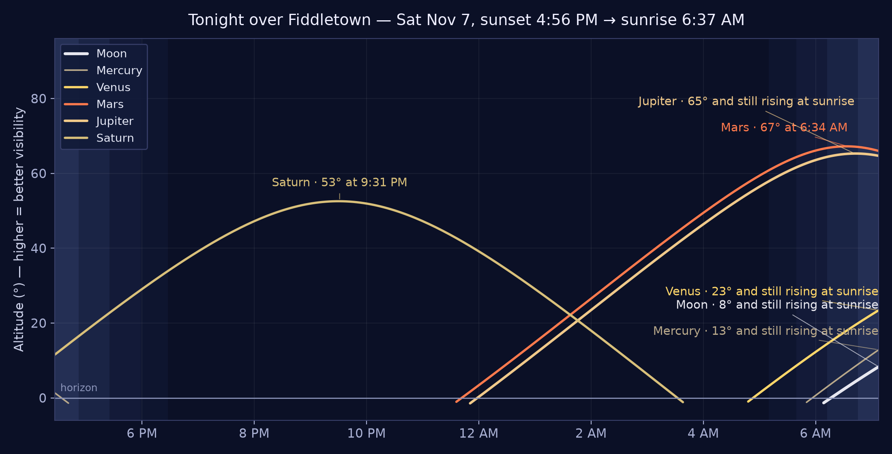

Fiddletown & the Shenandoah Valley · Updated all day
The Fiddletown Gazette
Saturday, November 7, 2026 · Morning Edition — published 6:00 AM PT
🌤️ Sunny day, high 72° — tonight partly cloudy, low 50°; no NWS alerts; foothill highways clear, no restrictions (NWS / Caltrans / CHP)
The Lead
Saturday in the foothills: a sunny 72° day with a full card — worm bins and a Christmas Boutique in Jackson, a harvest festival in Fair Play, and Gold Rush ghosts premiering at the Kennedy Mine tonight
The Outlook — Five DaysNational Weather Service · Sat Nov 7, 6:14 AM PT
Today
Sunny
72°/50°
Dry
Sun
Mostly Sunny
71°/47°
Dry
Mon
Sunny
70°/48°
Dry
Tue
Sunny
71°/50°
Dry
Wed
Sunny
73°/54°
Precip 15%
Saturday, November 7 — a sunny Saturday in the foothills, high near 72°, with no National Weather Service alerts in effect at the morning check. The CHP's live board lists nothing in Amador County this morning, and Caltrans lists no restrictions on SR-88, SR-49, or SR-124. The day's card runs twelve deep: vermicomposting in Jackson at 9:00 AM, the Christmas Boutique's Saturday return at 10:00 AM, the Fair Play Harvest Festival at 11:00 AM, and Candy Cash Out at 1:00 PM — then tonight, the Ghosts of the Gold Rush world premiere at the Kennedy Gold Mine (gates 4:00 PM), the Peace Officer Awards Banquet in Sutter Creek at 5:15 PM, the Shrimp Feed at 6:00 PM, and the Volcano stage at 7:30 PM. One closure to plan around: Cooper Wines' tasting room is closed to the public today for its members' release (see the Community Wire). Tonight turns partly cloudy, low around 50°, and the sky stays moonless — Saturn high in the south, Taurid fireballs after midnight.
🚨 Need to Know — the Safety Wire
Roads — clear across the beat this morning. The CHP's live CAD Traffic board (Stockton center), read at 6:03–6:08 AM, lists 2 incidents — none in Amador County, and nothing on SR-49, SR-88, SR-124, or SR-16. Both calls are outside the beat, noted so foothill drivers heading that way know: an animal hazard at 5:13 AM — a white cow standing in the roadway at Center St / Del Orto Rd, San Andreas (Calaveras County; whether it is still there was unconfirmed at the last update), and a traffic hazard at 6:05 AM on southbound I-5 just north of SR-120 in the Stockton area. Caltrans' morning report lists no traffic restrictions on SR-88, SR-49 in the central area, or SR-124 — no closures, no chain control.
Weather — no alerts; a sunny Saturday, no weather event.No NWS alerts are in effect for the Fiddletown area at the morning check — no warnings, watches, or advisories. Today is sunny with a high near 72° and light winds. Tonight is partly cloudy with a low around 50°. No weather event is in progress or credibly forecast; the fair run holds through the weekend and into the week (Sunday mostly sunny at 71°, Monday sunny at 70°), with the first rain chance not arriving until late Wednesday.
Source: National Weather Service (api.weather.gov), Sacramento forecast for Fiddletown · Checked 6:01 AM PT, Nov 7
Fire weather — no concerns. Light winds and a sunny, mild day; no Red Flag Warnings. The volunteer lookout season ended Thursday evening, and CAL FIRE AEU has lifted its burn-permit suspension (effective Friday at 8:00 AM), with a debris-burning safety reminder for the weekend (see the Community Wire). Burn-day status: the paper does not state it — the recorded Burn Day Line (updated daily 4–5 PM) is the authority; call before lighting any outdoor fire.
Sources: National Weather Service, Sacramento · CAL FIRE AEU · Nov 7
Today in the Foothills
A full Saturday in the foothills — twelve listings on the card. The events desk carried three isPublic items in the beat for Sat Nov 7 (the Fair Play Harvest Festival, Andis Wines' Veterans Weekend, and A Night in Blue — all carded below); its other Nov 7 public items are outside the beat and are not printed. The morning sweep of the public calendars, read live at 6:02–6:05 AM, adds seven: events.lodedown.com (Amador) lists four events for today (the worm bin, the Christmas Boutique, the Kennedy Mine premiere, and the awards banquet — all carded below); Best of Amador carries the Candy Cash Out, the Shrimp Feed, and the Volcano stage (read Nov 6); Amador Wine Country lists 0 events for Nov 7 (its next listing is tomorrow's Art & Wine Stroll in Sutter Creek); and Visit Amador's own page would not refresh at press time — its weekend listings below ride on yesterday's live reading, labeled as such. Two standing listings round out the card. One planning note: Cooper Wines' tasting room is closed to the public today for its members' Fall Wine Release (see the Community Wire). Count for the record: desk items in the beat today, 3; calendar finds today, 7; standing listings, 2.
Rail-bike runs out of the Amador staging area — an 8-mile round trip, running today and through the weekend, 8:00 AM–5:30 PM each day. Tandem from $90, quad from $175, per the calendar listing.
Source: Visit Amador — events (read live Nov 6; the calendar runs the listing all weekend) · Checked Nov 7
Build your own worm bin with the UC Master Gardeners of Amador County — the season's vermicomposting class at the county's General Services Administration building.
Billed as the Fair Play event of the year, with proceeds to the Fair Play Winery Association. Note: the winery's newsletter gives the festival's dates two ways (Nov 6–7 in its text, Nov 7–8 in its heading), so the desk lists the start as tentative — check Golden Leaves before you drive.
Source: events desk (public listing) · Checked Nov 7
The 65-minute documentary's first public screening, at the mine itself: gates open at 4:00 PM for a self-guided tour of the Change House and grounds, the film at 6:00 PM with a cast-and-crew Q&A after, and VIP guests stay for a social gathering and paranormal investigation, 8:00 PM–1:00 AM. $40 general, $100 VIP. Bring a chair and warm clothing for the outdoor screening. The calendars list the evening three ways (4:00–9:00 PM on LodeDown; the full run to 1:00 AM on Visit Amador) — they describe one long evening, not three events; the schedule above is the Kennedy Mine Foundation's, via InEDC. Tonight's History box tells the film's story.
The Volcano Theatre Company's Ken Levine holiday comedy, second night of its run — $24 general, $22 seniors (plus a $1.25 online fee) — running Fri/Sat evenings and Sunday matinees through Dec 13.
A Night in Blue, in Plymouth, per the events desk's public listing. The listing publishes no venue or start time, so both are tentative — check before you drive.
Source: events desk (public listing) · Checked Nov 7
Standing listing: the Amador County Museum, 225 Church St, Jackson, is listed today at 11:00 AM – 3:00 PM — Saturday is one of the days its own description names (open Fridays, Saturdays, and Sundays). Its phone: (209) 257-1485.
Today, Sat Nov 7: Amador Rail Explorers (8:00 AM–5:30 PM, Ione), Vermicomposting (9:00 AM–12:00 PM, Jackson), Christmas Boutique (10:00 AM–3:00 PM, Jackson), Fair Play Harvest Festival (11:00 AM, Somerset), Candy Cash Out (1:00–3:00 PM, Jackson), the Ghosts of the Gold Rush premiere (gates 4:00 PM, film 6:00 PM, Jackson), the Peace Officer Awards Banquet (5:15 PM, Sutter Creek), the Shrimp Feed (6:00–9:00 PM, Sutter Creek) and On The Farce Day of Christmas (7:30–9:30 PM, Volcano) — see Today in the Foothills, above, plus the Amador County Museum (11:00 AM–3:00 PM, Jackson) and Andis Wines' Veterans Weekend (all day, Plymouth).
Sources: events desk · Visit Amador · Best of Amador · LodeDown · Checked Nov 7
Sun Nov 8, 11:00 AM–6:00 PM — Art & Wine Stroll in Sutter Creek, Main Street, Sutter Creek. Tasting rooms turn into galleries for the day; at Bella Grace's tasting room, meet painter Ron Antone and taste the 1646 Red Blend with a Tuscan squash soup (desk listing: tickets $40); Amador Wine Country's La Mesa listing features guest pencil and pastel artist Patti Fulton. Also Sun Nov 8: Amador Rail Explorers (8:00 AM–5:30 PM, Ione), the Amador County Museum (11:00 AM–3:00 PM, Jackson), Three for Silver live music (3:00–6:00 PM, 15950 Highway 49, Drytown), and the On The Farce Day of Christmas matinee (2:00–4:00 PM, Volcano).
Tue Nov 10, 5:00–10:00 PM — Marine Corps Birthday Ball, Castle Oaks Golf Course, Ione. $50 adults, $25 children. The Kennedy Mine film travels the same evening: Ghosts of the Gold Rush screens in Auburn (doors 6:00 PM, film 7:00 PM, Odd Fellows Lodge) for anyone who misses tonight's premiere.
Wed Nov 11 — Veterans Day:9:00–10:00 AM — Veterans Day Commemoration, Plymouth Veterans Park, Plymouth (free); 10:00 AM — Veterans Day Parade, Jackson (free).
Fri Nov 13 — Zinfandel Flight Weekend begins at Bella Grace Vineyards (Plymouth wine cave and Sutter Creek tasting room, Nov 13–15): the Estate, Old Vine, and Private Selection Zinfandels poured side by side. Also Fri Nov 13, 7:00 PM — Max Gomez at Feist Wines' Drytown Social Club, 15950 Highway 49, Drytown, and 5:00–7:30 PM — La Mesa "Big Brain" Trivia Night, 59 Main Street, Sutter Creek.
🏛️ Community Center doings have a hall of their own now — see At the Fiddletown Community Center, just below — next up there: Game Night, tomorrow, Sun Nov 8, 3:00–5:00 PM.
⭐ From our own hills — tonight, Gold Rush history takes the screen at a Gold Rush mine: this evening, Saturday, Nov 7, 2026, the documentary Ghosts of the Gold Rush makes its world premiere at the historic Kennedy Gold Mine in Jackson — gates at 4:00 PM, the 65-minute film at 6:00 PM, a cast-and-crew Q&A after, and VIP guests staying on for a paranormal investigation until 1:00 AM. Director Brandon Alvis's film walks the darker chapters of the rush — Hangtown's violent past, the 1922 Argonaut Mine disaster here in Jackson, a family murder tied to stolen gold — told as history, folklore, and witness accounts. The desk dug back to 1848 for a Nov 7 event in Fiddletown or Amador in the Gold Rush years, as the publisher directed: none could be verified — so today's highlight is the living-history tie, labeled as such: the beat's own history, screened at one of its own landmarks, on this date.
1846 — Snowbound in the Sierra. Snow began again on the evening of Nov 4, 1846 — the start of an eight-day storm — and by Nov 7 the Donner Party was trapped at Truckee Lake, its food already dangerously low, two years before gold was found at Coloma, on the emigrant road over the same Sierra our creeks drain from.
1962 — "You won't have Nixon to kick around anymore." The day after losing the California governor's race to Pat Brown, Richard Nixon gives his famous "last press conference" in Los Angeles, Nov 7, 1962. (He was elected president six years later.)
Wider page: 1916 Jeannette Rankin of Montana becomes the first woman elected to Congress · 1944 Franklin D. Roosevelt wins an unprecedented fourth term · 2000 the Bush–Gore election ends the night too close to call, and Hillary Clinton is elected to the Senate · 1665 the London Gazette — the oldest surviving English newspaper — is first published. A Gazette notes a Gazette.
Sources: InEDC — premiere report (Nov 4, 2026) · Film Daily (Nov 2, 2026) · HISTORY — This Day in History, November 7 · USA Today — Today in History, November 7 · Wikipedia, Donner Party · Checked Nov 7, 2026 · Staged research: history/2026-11-07.md
🔭 Star Chart — Tonight over Fiddletown

Tonight over Fiddletown — the Moon and visible planets, sunset to sunrise. Higher on the chart = higher in the sky = easier to see. (Chart: the Gazette sky desk, computed for Fiddletown.)
Tonight's chart (~8 PM, facing south):Saturn owns the evening again — about 47° up in the south at 8 PM and peaking at 53° around 9:31 PM. The Great Square of Pegasus rides high overhead, Cassiopeia climbs in the northeast, and Taurus — the Taurid radiant — rides the east. The evening is moonless — the Moon doesn't rise until about 6:05 AM, minutes before sunrise.
🌒 Moon:waning crescent, a thinning sliver — two days from the Nov 9 new moon. It rises at about 6:05 AM, so the whole evening is properly dark.
Planets up:Saturn takes the evening — high in the south all evening, setting about 3:45 AM. Mars rises about 11:40 PM and Jupiter about midnight, both brilliant before dawn. Venus is a pre-dawn object only, rising about 4:50 AM. Mercury is a pre-dawn footnote — not an evening target tonight.
Notable — the Southern Taurids, still active: the stream peaked Nov 4–5 and remains active tonight — the slow, bright "fireballs" from Comet 2P/Encke's debris, at modest rates with occasional fireballs brighter than Venus. Best hours are around and after midnight, when Taurus rides high. The Northern Taurids build toward Nov 11–12, and the Orionids wind down through tonight, their last listed night.
Viewing note (honest): a good night, with one honest caveat — tonight is partly cloudy with a low around 50°, after a sunny day at 72°. The hourly run shows partly cloudy skies early with mostly-clear spells mid-evening: Saturn through the gaps early, better odds later, and a moonless sky for Taurid fireballs after midnight. Dress warm.
Sources: Gazette sky desk (skyfield, computed for Fiddletown) · American Meteor Society / EarthSky (Taurids) · NWS Sacramento (conditions) · Checked Nov 7
🐦 On the Wing
THE GAZETTE'S BIRD-WATCHING DESK
The desk is listening. On the Wing carries the foothills' bird sightings — photos, footage, and field notes, town name only, as always. Pieces fly the front page for four days, then retire to the archive, where every published sighting stays on the record.
Our first sighting — a red-shafted Northern Flicker filmed on a Fiddletown deck on Halloween morning — has retired to the archive on schedule: 📚 The Sightings Archive.
Send yours: a photo or a few lines through the Suggestion Box below, and the desk will do the rest.
🌲 The Wild Side
LOCAL CRITTER SIGHTINGS — THE DESK HAS ITS NAME, NOV 5, 2026
The ballot is closed, and the desk has a name: The Wild Side. The reader ballot that opened Oct 31 closed today, Thu Nov 5, under the desk's standing close rule — no new ballots arrived by the deadline (the final check ran this morning; the count never moved after Nov 2). The final tally stands tied, The Wild Side 1 · Who Goes There? 1, two votes counted — and under the publisher's Nov 2 ruling, the desk takes the name of his original vote: The Wild Side. The ballot block and vote chart come out of the paper today, as the ruling directed; the Editor thanks the foothills for voting, all two of you, and notes the tie was broken the way ties around here usually are — by the fellow who owns the press, voting first.
The foothills are full of neighbors who don't read the paper: deer in the garden, turkeys in the road, the occasional bobcat acting like it pays taxes. This desk carries their sightings — photos, footage, and field notes, town name only, as always.
Front-page retirements today: the desk's two Nov 1 sightings — the doe ("The Morning Visitor") and the western gray squirrel ("Breakfast, Held in Both Paws") — retire from the front page on the paper's four-day rule. Both stay on the permanent record in the 📚 Sightings Archive.
Sightings are open: send yours through the Suggestion Box below — every logged sighting joins the Sightings Archive.
The desk opened Oct 31, 2026 as the Critter Desk · Named The Wild Side Nov 5, 2026 · Birds keep their own desk at On the Wing, above
✉️ Nan's Corner
OUR FOUNDING CONTRIBUTOR
The Gazette has a correspondent. Nan Dell'Aquila writes this corner — dispatches, notes, and observations from her side of the foothills — filed by email and printed under her byline, as she sends them. (Her cooking lives in Nan's Recipe Corner, over in the rail; this corner is for everything else.)
Chocolate Chip Banana Cookies
By Nan Dell'Aquila · Fri Nov 6, 2026
Nan's newest filing is a cookie: Chocolate Chip Banana Cookies, from her recipe card — bananas creamed right into the dough, a chill in the fridge, nine minutes in the oven. She doubled her first batch, used a whole bag of chocolate chunks, let the dough rest a few hours cold so they stayed fluffy, and reports them thick and yummy. It runs in full in Nan's Recipe Corner, photo included and tappable to the original, per her standing request.
Nan's second filing of the day swaps the oven for the cocktail shaker: a Bourbon Maple Old Fashioned, straight from her recipe card — bourbon, maple syrup, and bitters, shaken twenty times and poured over one big cube. It runs in full in Nan's Recipe Corner, photo included and tappable to the original, per her standing request.
Nan's first piece for the paper arrived the way her best things do — no preamble, just the goods: a link to her recipe card for Pecan Pie Brownies. It runs in full in Nan's Recipe Corner, over in the rail. Welcome to the masthead, Nan.
Retired today: Nan's Chicken Parmesan Rolls piece (Nov 1) leaves the front page on the paper's four-day rule for contributed pieces. The recipe itself is not going anywhere — it stands on the permanent record in the Recipe Archive.
Nan's Corner opened Oct 31, 2026
🏆 The Winsteds' Bocce Court
Every neighborhood has a capital, and around here it's the Winsteds' bocce court. Carol keeps the bracket, the scorebook, and — when a throw lands close enough to argue about — the final word. Joe tends the coals, because the court comes with the other half of the institution: the fabulous barbecue, the kind where the brisket has a schedule, the sides appear like magic, and nobody has ever left hungry or entirely sure how the last game ended.
House rules, as best the Gazette can establish them: winners eat first, losers wash up, and a ball within a finger's width of the pallino is settled by Carol — appeal is not a thing.
Neighbor color from the Gazette · Oct 31
🏁 Postcard from Las Vegas
THE SECTION'S FIRST POST · POSTED FOR CAROL BY THE PUBLISHER · SAT OCT 31, 2026
The sign says it plainly: DREAM RACING — drive exotic cars on track today. Outside Las Vegas Motor Speedway, from Carol & Joe's Vegas trip this week.
Carol hasn't filed her first piece yet, so the publisher is planting a flag for her: a postcard from the Winsteds' Las Vegas trip, where the speedway does its own inviting. Bocce is a game of touch and patience; this is the other end of the sporting world — and the Gazette notes, for the record, that the court's defending champions are out of town and the title is safe until they're home.
Carol's own filings will run here under her byline whenever she's ready — the desk is hers.
Weather
Today: Sunny, high near 72°. No alerts in effect at the morning check — and no weather event in progress or credibly forecast; the week's story remains fair.
Tonight: Partly cloudy, low around 50° — a moonless night with clouds to dodge early (see the Star Chart). Sunset 4:56 PM; sunrise tomorrow 6:37 AM.
Sunday mostly sunny, high near 71° (partly cloudy at night, 47°); Monday sunny at 70°; Tuesday sunny at 71°; Veterans Day sunny at 73° — the fair run holds, with the first rain chance (slight, 15%) not arriving until late Wednesday.
Source: National Weather Service, Sacramento (Fiddletown zone) · Forecast checked 6:01 AM PT, Nov 7
🌅 The Almanac
Sunrise 6:36 AM · Sunset 4:56 PM — a 10-hour-20-minute day, and shrinking.
Moon: waning crescent, a thinning sliver, two days from the Nov 9 new moon. It rises at about 6:05 AM tomorrow, so tonight is moonless — good news for Taurid fireballs, with early clouds to dodge.
📅 A full Saturday. Today, Sat Nov 7, the foothills run on PST (standard time) until March. Next at the hall: Game Night at the Fiddletown Community Center, tomorrow, Sun Nov 8.
Day 311 of 2026 · 54 days left in the year
🎧 What We're Listening To
THE GAZETTE'S LISTENING DESK — WHAT'S ON, AT THE CABIN AND AROUND THE NEIGHBORHOOD
🪕 Billy Strings & Friends — the Cabin Playlist
FILED BY DAVE DELL'AQUILA · SAT OCT 31, 2026
First entry on the listening desk, and it's the sound of the cabin: Billy Strings and the picking circle around him — flatpicked guitar at full gallop, banjo and mandolin trading breaks, the whole bluegrass engine room running warm. This is woodstove music: built for a rainy Halloween in the foothills, a pot on the stove, and nowhere to be. When the boy from Michigan leans into a traditional number and the band leans with him, a cabin in Amador County is exactly the room it was mixed for.
The playlist itself is called Cabin Tunes — Dave's running order, Billy Strings and friends sequenced for the woodstove hours.
Listening notes are welcome from the neighborhood: what you're playing, and where it sounds best. File them through the Suggestion Box below, or by Gazette email if you're on the contributors' list.
🔥 Burn Day Line
Planning to burn? Always call first. The Amador County Burn Day Information Line tells you whether today is a permissive burn day and when a CAL FIRE permit is required. The recording is updated daily between 4–5 PM.
• By email: send a message with the subject “Joke Vault JOIN” to dave@dellaquila.com — tap that link and the subject fills itself in.
No account, no cost — one email a day, and reply STOP anytime to leave.
📬 The Suggestion Box
Feedback, comments, corrections, and story tips for this edition — all welcome. Tell us what the paper got right, what it missed, and what it should cover next.
How it works: the Gazette is a static page with no accounts and no comment storage — the button opens your own email app with your note addressed to the editor, and you press send there. Nothing is collected by this page. Prefer to write directly? dave@dellaquila.com